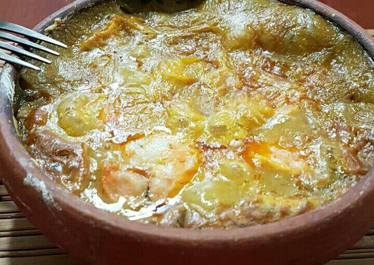

Ingredientes
3 plátanos verdes rayados
2 cebollas rojas finamente picadas
2 tomates picaditos
2 pimientos picados
125 gr pasta de maní
1 libra pescado fileteado
2 cdas. ajo
Cilantro picado
Comino
Sal y pimienta
Preparación
Se hace un sofrito con la cebolla, el tomate, el pimiento, cilantro picado, achiote y ajo, cuando este listo se separa en 2 porciones.
Se raya bien plátano verde y con la mano se maja un rato para q la masa tome consistencia, cuando esta lista se le agrega unas 4 tazas de agua y q se deshaga la masa.
Se lleva a fuego medio y se la agrega una porción del sofrito y se salpimienta, se deja hervir moviendo constantemente hasta q espese.
Si la masa se pone muy dura se le agrega agua y se sigue moviendo para q no se pegue en el fondo de la olla, cuando el plátano esta cocinado se saca del fuego y se reserva.
A la otra porción de sofrito se le agrega la pasta de maní, previamente disuelta y se deja que tome consistencia a fuego medio, se salpimienta y cuando este listo se reserva.
Se aliñan los filetes de pescado con comino, sal y pimienta, si se desea se pueden añadir otros mariscos como camarones, ostras, pulpo, etc.
En un refractario o una olla de barro (cazuela de barro) o cazuelas individuales, se pone una porción de la masa de plátano verde.
Se acomodan los filetes de pescado y se le agrega una capa generosa de la salsa de maní bien esparcida y se le agrega la ultima capa de plátano verde, se lleva al horno a 180ºc hasta q se dore, se sirve caliente acompañado de rodajas de limón.